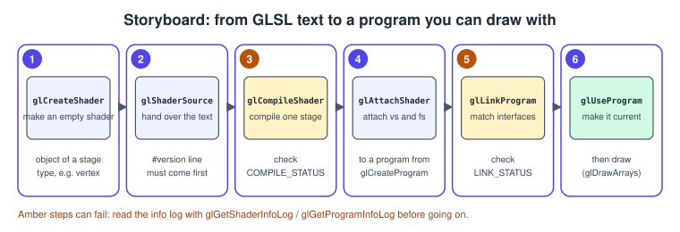
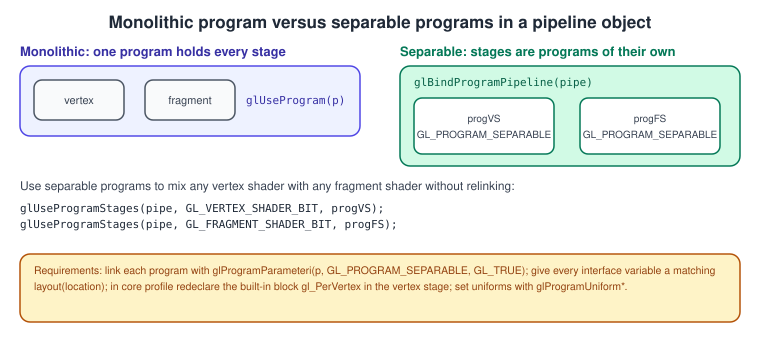
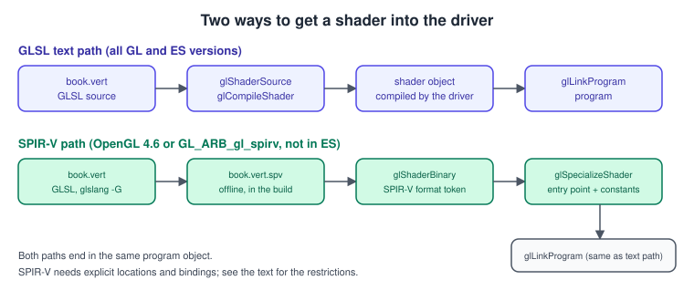

Shaders and Programs
|
This content was generated with the assistance of AI and should be verified against the official documentation before being relied on in production. |
A GLSL source file is only text. Before the GPU can run it, the driver has to compile each stage, link the stages together and match their inputs and outputs; the API objects that represent this work are shader objects and program objects. This page covers their life cycle, how to read the diagnostics, how to ask a linked program what it contains, how to split a program into reusable stages, how to cache compiled programs and how to ship SPIR-V instead of text. The language itself is described in The OpenGL Shading Language (GLSL) and the values a program reads in Uniforms, UBOs and SSBOs.
The facts were checked in November 2026. The versions documented are OpenGL 4.6 with GLSL 4.60 and OpenGL ES 3.2 with GLSL ES 3.20. Everything in the compile and link sections works from OpenGL 2.0 and ES 2.0; separate shader objects and program binaries are core in OpenGL 4.1 (ES 3.1 for separate shaders, ES 3.0 for binaries), the program interface query in 4.3 (ES 3.1) and SPIR-V in 4.6 only, on desktop. macOS stops at OpenGL 4.1, so the Bookshelf baseline uses 4.1 features and marks later ones as optional. For the pipeline stages themselves see The Rendering Pipeline and the OpenGL view of it.
Objects and life cycle
-
A shader object holds the source (or SPIR-V) and compile result of one stage. Its type is chosen at creation:
GL_VERTEX_SHADER,GL_FRAGMENT_SHADER,GL_GEOMETRY_SHADER,GL_TESS_CONTROL_SHADER,GL_TESS_EVALUATION_SHADERorGL_COMPUTE_SHADER. -
A program object holds the linked result of several shader objects: the executable for every stage, the interface matching, the numbering of attributes, uniforms and blocks, and the default-block uniform values. A program is what you activate to draw with
glUseProgram.
The shader objects are only an intermediate step: after a successful link you can detach and delete them, and the program keeps working. The cycle in code is six steps, shown as a storyboard and then as a function.

#include <glad/gl.h>
#include <string>
#include <vector>
// Compile one stage. Returns 0 and fills 'log' on failure.
GLuint compileStage(GLenum type, const char* source, std::string& log) {
const GLuint shader = glCreateShader(type); // 1
glShaderSource(shader, 1, &source, nullptr); // 2: count, strings, lengths (nullptr = NUL terminated)
glCompileShader(shader); // 3
GLint ok = GL_FALSE;
glGetShaderiv(shader, GL_COMPILE_STATUS, &ok);
if (!ok) {
GLint length = 0;
glGetShaderiv(shader, GL_INFO_LOG_LENGTH, &length); // includes the terminating NUL
log.assign(static_cast<size_t>(length > 1 ? length : 1), '\0');
glGetShaderInfoLog(shader, static_cast<GLsizei>(log.size()), nullptr, log.data());
glDeleteShader(shader);
return 0;
}
return shader;
}
GLuint linkProgram(const std::vector<GLuint>& shaders, std::string& log) {
const GLuint program = glCreateProgram(); // 4
for (GLuint s : shaders) glAttachShader(program, s);
glLinkProgram(program); // 5
GLint ok = GL_FALSE;
glGetProgramiv(program, GL_LINK_STATUS, &ok);
for (GLuint s : shaders) glDetachShader(program, s); // the program keeps the executable
if (!ok) {
GLint length = 0;
glGetProgramiv(program, GL_INFO_LOG_LENGTH, &length);
log.assign(static_cast<size_t>(length > 1 ? length : 1), '\0');
glGetProgramInfoLog(program, static_cast<GLsizei>(log.size()), nullptr, log.data());
glDeleteProgram(program);
return 0;
}
return program; // 6: glUseProgram(program) before drawing
}Source: OpenGL 4 reference: glCompileShader, glLinkProgram and glShaderSource.
Details worth knowing:
-
glShaderSourcetakes an array of strings and concatenates them. Shaders can therefore be assembled from several pieces, provided that the first piece starts with#version; a common use is a shared header with common functions. Error line numbers then refer to the concatenated source, with the source string number in front. -
glDeleteShaderonly flags a shader for deletion if it is still attached to a program; the storage is released when the last program that uses it is deleted or the shader is detached. Detaching and deleting right after the link, as above, is the usual pattern. -
glDeleteProgramon the current program is deferred until it is no longer in use. -
The status of a compile or link is reported only through
GL_COMPILE_STATUSandGL_LINK_STATUS. A returnedGL_NO_ERRORfromglGetErrorsays nothing about shader quality; a compile failure also never sets an error flag. -
The info log is driver text, not a stable format. Warnings can appear even on success (read the log whenever it is non-empty during development), and the log line numbering and wording differ by vendor. Each vendor and Mesa format the lines differently, with the source string number and the line number in different positions.
-
glValidateProgramchecks whether the program can run with the current state (for example a sampler of a different type bound to the same texture unit); it is a debugging tool and not a replacement for testing a draw call.
Compile failures worth recognising: #version missing or not first; a version higher than the context provides; using a
built-in that exists only in a later version or in the compatibility profile; a missing main; a type mismatch such as
vec3 v = vec2(1.0);; and assigning to a uniform. Link failures are about the relationships between stages: an in of the
fragment shader with no matching out, a vertex output the fragment stage declares with a different type, two stages
declaring a uniform with the same name but a different type, exceeding a resource limit, or no stage that defines main.
Attribute, output and uniform numbering
The program decides where each variable lives, and you must agree with it. For vertex inputs and fragment outputs there are three ways, in order of preference:
| Method | Code | Notes |
|---|---|---|
In the shader |
|
GLSL 3.30, or |
Before linking |
|
affects the next link only; the older way and what ES 2.0 requires |
After linking |
|
you must then use the numbers the program picked |
The Bookshelf shaders use layout(location) everywhere (and the buffer pages use the same numbers for the vertex array), so
the attributes line up with the vertex array without a single query call. See
Buffers and Vertex Specification.
For uniforms, glGetUniformLocation(program, "uTint") returns the location, -1 if the uniform is not active (declared but
not affecting the output, so the compiler removed it) and it must be called again after a re-link, because a link may renumber
them. Elements of an array are addressed with "uLights[0]" and members of a struct with "uMaterial.color". layout(location = N) uniform (GLSL 4.30) fixes the numbers in the shader.
Introspection
To discover what a linked program contains (for a material system, a hot-reload tool or a debug panel) there are two APIs.
The old one, available since OpenGL 2.0 and usable on macOS:
#include <glad/gl.h>
#include <cstdio>
#include <vector>
void dumpActive(GLuint program) {
GLint count = 0, maxLength = 0;
glGetProgramiv(program, GL_ACTIVE_ATTRIBUTES, &count);
glGetProgramiv(program, GL_ACTIVE_ATTRIBUTE_MAX_LENGTH, &maxLength);
std::vector<char> name(static_cast<size_t>(maxLength > 0 ? maxLength : 1));
for (GLint i = 0; i < count; ++i) {
GLint size = 0;
GLenum type = 0;
glGetActiveAttrib(program, static_cast<GLuint>(i), static_cast<GLsizei>(name.size()), nullptr, &size, &type, name.data());
std::printf("attribute %-16s location %d type 0x%04X size %d\n",
name.data(), glGetAttribLocation(program, name.data()), type, size);
}
glGetProgramiv(program, GL_ACTIVE_UNIFORMS, &count);
glGetProgramiv(program, GL_ACTIVE_UNIFORM_MAX_LENGTH, &maxLength);
name.assign(static_cast<size_t>(maxLength > 0 ? maxLength : 1), '\0');
for (GLint i = 0; i < count; ++i) {
GLint size = 0;
GLenum type = 0;
glGetActiveUniform(program, static_cast<GLuint>(i), static_cast<GLsizei>(name.size()), nullptr, &size, &type, name.data());
std::printf("uniform %-16s location %d type 0x%04X size %d\n",
name.data(), glGetUniformLocation(program, name.data()), type, size);
}
}Source: OpenGL 4 reference: glGetActiveUniform and glGetActiveAttrib.
Uniforms inside a block report location -1 here, because they have no location; query blocks with
glGetActiveUniformBlockiv as shown in the uniforms page. The newer one, the program interface query (OpenGL 4.3, ES 3.1,
or GL_ARB_program_interface_query), treats every kind of resource uniformly: inputs, outputs, uniforms, blocks, buffer
variables, transform feedback varyings.
#include <glad/gl.h>
#include <cstdio>
#include <string>
// Print every active vertex input with its location and GLSL type enum. Requires OpenGL 4.3 or ES 3.1.
void dumpInputs(GLuint program) {
GLint count = 0;
glGetProgramInterfaceiv(program, GL_PROGRAM_INPUT, GL_ACTIVE_RESOURCES, &count);
const GLenum props[3] = {GL_TYPE, GL_LOCATION, GL_NAME_LENGTH};
for (GLint i = 0; i < count; ++i) {
GLint v[3] = {};
glGetProgramResourceiv(program, GL_PROGRAM_INPUT, static_cast<GLuint>(i), 3, props, 3, nullptr, v);
std::string name(static_cast<size_t>(v[2]), '\0');
glGetProgramResourceName(program, GL_PROGRAM_INPUT, static_cast<GLuint>(i),
static_cast<GLsizei>(name.size()), nullptr, name.data());
name.resize(name.empty() ? 0 : name.size() - 1); // drop the NUL
std::printf("input %s location %d type 0x%04X\n", name.c_str(), v[1], static_cast<unsigned>(v[0]));
}
}Separable programs and program pipelines
With the default model, a program contains one vertex shader, one fragment shader and so on, and changing only the
fragment shader means linking a new program. OpenGL 4.1 (GL_ARB_separate_shader_objects, ES 3.1) adds separable programs:
a program may contain a single stage, and a program pipeline object assembles one program per stage at bind time. This
is the model Vulkan, Metal and WebGPU descendants use (a stage is an object of its own) and it allows many vertex
shaders to combine with many fragment shaders without a combinatorial number of links.

Rules for separable shaders:
-
mark the program separable before linking, with
glProgramParameteri(p, GL_PROGRAM_SEPARABLE, GL_TRUE);glCreateShaderProgramv(type, 1, &source)compiles and links a single-stage separable program in one call; -
every interface variable between stages must be matched by an explicit
layout(location = N)(names no longer link them because stages are linked at a different time); -
a core-profile vertex, tessellation or geometry shader must redeclare the built-in output block, for example
out gl_PerVertex { vec4 gl_Position; };, listing the members it writes; -
set uniforms with
glProgramUniform*, which takes the program as an argument, because the "current program" is not meaningful when a pipeline is bound (glUseProgram(0)first, or the program takes precedence over the pipeline).
#include <glad/gl.h>
#include <cstdio>
static const char* kVertex = R"(#version 410 core
layout(location = 0) in vec3 aPosition;
layout(location = 1) in vec2 aUv;
out gl_PerVertex { vec4 gl_Position; };
layout(location = 0) out vec2 vUv;
void main() {
vUv = aUv;
gl_Position = vec4(aPosition, 1.0);
}
)";
static const char* kFragment = R"(#version 410 core
layout(location = 0) in vec2 vUv;
layout(location = 0) out vec4 oColor;
uniform vec4 uTint;
void main() { oColor = vec4(vUv, 0.0, 1.0) * uTint; }
)";
GLuint makeStage(GLenum type, const char* source) {
const GLuint program = glCreateShaderProgramv(type, 1, &source); // compile + link, separable
GLint ok = GL_FALSE;
glGetProgramiv(program, GL_LINK_STATUS, &ok);
if (!ok) {
char log[2048];
glGetProgramInfoLog(program, sizeof log, nullptr, log);
std::fprintf(stderr, "stage failed:\n%s\n", log);
}
return program;
}
void bindPipeline() {
const GLuint vs = makeStage(GL_VERTEX_SHADER, kVertex);
const GLuint fs = makeStage(GL_FRAGMENT_SHADER, kFragment);
GLuint pipeline = 0;
glGenProgramPipelines(1, &pipeline);
glUseProgramStages(pipeline, GL_VERTEX_SHADER_BIT, vs);
glUseProgramStages(pipeline, GL_FRAGMENT_SHADER_BIT, fs);
glProgramUniform4f(fs, glGetUniformLocation(fs, "uTint"), 1.0f, 0.9f, 0.8f, 1.0f); // no glUseProgram needed
glUseProgram(0); // a current program would override the pipeline
glBindProgramPipeline(pipeline);
// ... draw ...
}Two limits keep separable programs from being the default. First, a driver cannot optimise across stages that were
linked apart (a varying that the fragment shader ignores is still computed by the vertex shader), so a monolithic program can be
faster. Second, macOS and some mobile drivers support separate shader objects less reliably than plain programs. The
Bookshelf uses monolithic programs, and the glProgramUniform* family is useful regardless: it sets a uniform of any program without
making it current, which also avoids bind-to-edit hazards (see
Direct State Access).
Program binaries and caching
Compiling and linking can take tens of milliseconds per program, which is visible as a start-up pause in a game with
hundreds of shaders. glGetProgramBinary (OpenGL 4.1, ES 3.0, GL_ARB_get_program_binary) retrieves the compiled,
driver-specific executable of a linked program and glProgramBinary restores it, skipping compilation.
Rules for binaries:
-
The format is opaque and driver specific.
GL_NUM_PROGRAM_BINARY_FORMATSmay even be 0, meaning the feature is unavailable. A binary is valid only for the same driver version, GPU and, often, the same driver settings; after a driver updateglProgramBinarymay fail and your code must fall back to compiling from source. -
Before linking, ask the driver to keep the binary retrievable:
glProgramParameteri(p, GL_PROGRAM_BINARY_RETRIEVABLE_HINT, GL_TRUE). -
Never ship binaries to other machines; they are a cache, not an asset format. Key the cache with the shader text plus
GL_VENDOR,GL_RENDERERandGL_VERSION, and delete it when the key changes. -
Many drivers already keep their own on-disk shader cache; check whether your own helps by measuring.
The Bookshelf ShaderProgram helper
The reusable class below wraps everything on this page: compile and link with diagnostics, the cache, introspection and
glDeleteProgram in the destructor. It is the shader helper of the Bookshelf GL project; later pages assume it
exists. Save it as shader_program.hpp.
#pragma once
#include <glad/gl.h>
#include <cstdio>
#include <fstream>
#include <string>
#include <utility>
#include <vector>
class ShaderProgram {
public:
struct Stage {
GLenum type;
std::string source;
};
ShaderProgram() = default;
ShaderProgram(const ShaderProgram&) = delete;
ShaderProgram& operator=(const ShaderProgram&) = delete;
ShaderProgram(ShaderProgram&& other) noexcept : id_(std::exchange(other.id_, 0)) {}
ShaderProgram& operator=(ShaderProgram&& other) noexcept {
if (this != &other) {
reset();
id_ = std::exchange(other.id_, 0);
}
return *this;
}
~ShaderProgram() { reset(); }
GLuint id() const { return id_; }
explicit operator bool() const { return id_ != 0; }
void use() const { glUseProgram(id_); }
// Compile and link. On failure 'error' receives the info log and the object stays empty.
bool build(const std::vector<Stage>& stages, std::string& error) {
const GLuint program = glCreateProgram();
glProgramParameteri(program, GL_PROGRAM_BINARY_RETRIEVABLE_HINT, GL_TRUE);
std::vector<GLuint> shaders;
bool ok = true;
for (const Stage& stage : stages) {
const GLuint shader = compile(stage, error);
if (!shader) {
ok = false;
break;
}
glAttachShader(program, shader);
shaders.push_back(shader);
}
if (ok) {
glLinkProgram(program);
GLint status = GL_FALSE;
glGetProgramiv(program, GL_LINK_STATUS, &status);
if (!status) {
error = "link error:\n" + log(program, false);
ok = false;
}
}
for (GLuint shader : shaders) {
glDetachShader(program, shader);
glDeleteShader(shader);
}
if (!ok) {
glDeleteProgram(program);
return false;
}
reset();
id_ = program;
return true;
}
// Save the driver-specific binary: first the format token, then the bytes.
bool saveBinary(const std::string& path) const {
GLint length = 0;
glGetProgramiv(id_, GL_PROGRAM_BINARY_LENGTH, &length);
if (length <= 0) return false;
std::vector<char> data(static_cast<size_t>(length));
GLsizei written = 0;
GLenum format = 0;
glGetProgramBinary(id_, length, &written, &format, data.data());
std::ofstream out(path, std::ios::binary);
out.write(reinterpret_cast<const char*>(&format), sizeof format);
out.write(data.data(), written);
return static_cast<bool>(out);
}
// Restore a saved binary. Returns false if it is missing or the driver rejects it: then build from source.
bool loadBinary(const std::string& path) {
std::ifstream in(path, std::ios::binary | std::ios::ate);
if (!in) return false;
const std::streamsize size = in.tellg();
if (size <= static_cast<std::streamsize>(sizeof(GLenum))) return false;
in.seekg(0);
GLenum format = 0;
in.read(reinterpret_cast<char*>(&format), sizeof format);
std::vector<char> data(static_cast<size_t>(size) - sizeof format);
in.read(data.data(), static_cast<std::streamsize>(data.size()));
const GLuint program = glCreateProgram();
glProgramBinary(program, format, data.data(), static_cast<GLsizei>(data.size()));
GLint status = GL_FALSE;
glGetProgramiv(program, GL_LINK_STATUS, &status);
if (!status) {
glDeleteProgram(program);
return false;
}
reset();
id_ = program;
return true;
}
// Print the active attributes and uniforms (works on OpenGL 2.0 and later).
void dump() const {
GLint count = 0, maxLength = 0;
glGetProgramiv(id_, GL_ACTIVE_ATTRIBUTES, &count);
glGetProgramiv(id_, GL_ACTIVE_ATTRIBUTE_MAX_LENGTH, &maxLength);
std::vector<char> name(static_cast<size_t>(maxLength > 0 ? maxLength : 1));
for (GLint i = 0; i < count; ++i) {
GLint size = 0;
GLenum type = 0;
glGetActiveAttrib(id_, static_cast<GLuint>(i), static_cast<GLsizei>(name.size()), nullptr, &size, &type, name.data());
std::printf("attribute %-14s location %2d type 0x%04X\n", name.data(), glGetAttribLocation(id_, name.data()), type);
}
glGetProgramiv(id_, GL_ACTIVE_UNIFORMS, &count);
glGetProgramiv(id_, GL_ACTIVE_UNIFORM_MAX_LENGTH, &maxLength);
name.assign(static_cast<size_t>(maxLength > 0 ? maxLength : 1), '\0');
for (GLint i = 0; i < count; ++i) {
GLint size = 0;
GLenum type = 0;
glGetActiveUniform(id_, static_cast<GLuint>(i), static_cast<GLsizei>(name.size()), nullptr, &size, &type, name.data());
std::printf("uniform %-14s location %2d type 0x%04X size %d\n", name.data(), glGetUniformLocation(id_, name.data()), type, size);
}
}
private:
GLuint id_ = 0;
void reset() {
if (id_) glDeleteProgram(id_);
id_ = 0;
}
static std::string log(GLuint object, bool isShader) {
GLint length = 0;
if (isShader) glGetShaderiv(object, GL_INFO_LOG_LENGTH, &length);
else glGetProgramiv(object, GL_INFO_LOG_LENGTH, &length);
std::string text(static_cast<size_t>(length > 1 ? length : 1), '\0');
if (isShader) glGetShaderInfoLog(object, static_cast<GLsizei>(text.size()), nullptr, text.data());
else glGetProgramInfoLog(object, static_cast<GLsizei>(text.size()), nullptr, text.data());
return text;
}
static GLuint compile(const Stage& stage, std::string& error) {
const GLuint shader = glCreateShader(stage.type);
const char* text = stage.source.c_str();
glShaderSource(shader, 1, &text, nullptr);
glCompileShader(shader);
GLint status = GL_FALSE;
glGetShaderiv(shader, GL_COMPILE_STATUS, &status);
if (!status) {
error = "compile error:\n" + log(shader, true);
glDeleteShader(shader);
return 0;
}
return shader;
}
};A runnable test, main.cpp: it creates an invisible 4.1 core window, builds the Bookshelf book program, prints what the
compiler kept, stores a binary and loads it back.
#include <glad/gl.h>
#include <GLFW/glfw3.h>
#include <cstdio>
#include <string>
#include "shader_program.hpp"
static const char* kVert = R"(#version 410 core
layout(location = 0) in vec3 aPosition;
layout(location = 1) in vec3 aNormal;
layout(location = 2) in vec2 aUv;
uniform mat4 uModel;
uniform mat4 uViewProj;
out vec2 vUv;
out vec3 vNormal;
void main() {
vUv = aUv;
vNormal = mat3(uModel) * aNormal;
gl_Position = uViewProj * uModel * vec4(aPosition, 1.0);
}
)";
static const char* kFrag = R"(#version 410 core
in vec2 vUv;
in vec3 vNormal;
uniform sampler2D uCover;
uniform vec3 uLightDir;
out vec4 oColor;
void main() {
float lambert = max(dot(normalize(vNormal), normalize(uLightDir)), 0.0);
oColor = vec4(texture(uCover, vUv).rgb * (0.2 + 0.8 * lambert), 1.0);
}
)";
int main() {
if (!glfwInit()) return 1;
glfwWindowHint(GLFW_VISIBLE, GLFW_FALSE);
glfwWindowHint(GLFW_CONTEXT_VERSION_MAJOR, 4);
glfwWindowHint(GLFW_CONTEXT_VERSION_MINOR, 1);
glfwWindowHint(GLFW_OPENGL_PROFILE, GLFW_OPENGL_CORE_PROFILE);
glfwWindowHint(GLFW_OPENGL_FORWARD_COMPAT, GL_TRUE);
GLFWwindow* window = glfwCreateWindow(64, 64, "shader test", nullptr, nullptr);
if (!window) return 1;
glfwMakeContextCurrent(window);
if (!gladLoadGL(glfwGetProcAddress)) return 1;
GLint formats = 0;
glGetIntegerv(GL_NUM_PROGRAM_BINARY_FORMATS, &formats);
std::printf("renderer: %s\nprogram binary formats: %d\n", reinterpret_cast<const char*>(glGetString(GL_RENDERER)), formats);
ShaderProgram program;
std::string error;
if (!program.build({{GL_VERTEX_SHADER, kVert}, {GL_FRAGMENT_SHADER, kFrag}}, error)) {
std::fprintf(stderr, "%s\n", error.c_str());
return 1;
}
program.dump();
if (formats > 0 && program.saveBinary("book.program")) {
ShaderProgram cached;
std::printf("binary reload %s\n", cached.loadBinary("book.program") ? "succeeded" : "failed: rebuild from source");
}
glfwTerminate();
return 0;
}Typical output has the three attributes (aPosition, aNormal, aUv) with their locations 0, 1 and 2 and the four
uniforms with positive locations. A uniform that the shader never uses would be missing from the list altogether.
SPIR-V shaders (OpenGL 4.6)
OpenGL 4.6 made the extension GL_ARB_gl_spirv core: instead of text, a shader may be a SPIR-V module, the binary
intermediate language of Vulkan, produced at build time from GLSL (or HLSL, Slang and other languages) by a compiler such as
glslang. The benefits are early, offline error reporting, no GLSL front end in the driver (so fewer driver-to-driver
differences in how the source is read), smaller shipped assets and one shader source shared with a Vulkan renderer. The costs
are an extra build step and support limited to desktop OpenGL 4.6 drivers: OpenGL ES has no SPIR-V entry point and macOS stops
at 4.1.

The OpenGL flavour of GLSL for SPIR-V has stricter rules than ordinary GLSL, because SPIR-V modules carry numbers, not names:
-
every interface variable (
inandout) needs an explicitlayout(location = N); -
every default-block uniform needs
layout(location = N); sampler bindings and block bindings needlayout(binding = N); -
specialisation constants declared as
layout(constant_id = N) const int kName = 8;can be given values atglSpecializeShadertime without recompiling the source; -
gl_VertexIDandgl_InstanceIDkeep their OpenGL meaning (do not mix them with Vulkan’sgl_VertexIndex).
Build the module offline with glslang, using -G for OpenGL semantics (-V would build Vulkan semantics, which OpenGL
rejects):
glslangValidator -G -S vert book.vert -o book.vert.spv
glslangValidator -G -S frag book.frag -o book.frag.spv
spirv-val --target-env opengl4.5 book.frag.spv # optional validation from the SPIRV-Tools packageSource: glslang on GitHub and OpenGL Wiki: SPIR-V.
At run time, load the bytes, hand them to the shader object with glShaderBinary, name the entry point and the values of the
specialisation constants with glSpecializeShader, then continue as before (compile status, attach, link):
#include <glad/gl.h>
#include <cstdio>
#include <fstream>
#include <vector>
GLuint loadSpirvStage(GLenum type, const char* path, GLuint kMaxLights) {
if (!GLAD_GL_VERSION_4_6) { // on older drivers generate glad with GL_ARB_gl_spirv and test that flag too
std::fprintf(stderr, "SPIR-V shaders are not supported by this context\n");
return 0;
}
std::ifstream in(path, std::ios::binary | std::ios::ate);
if (!in) return 0;
std::vector<char> bytes(static_cast<size_t>(in.tellg()));
in.seekg(0);
in.read(bytes.data(), static_cast<std::streamsize>(bytes.size()));
const GLuint shader = glCreateShader(type);
glShaderBinary(1, &shader, GL_SHADER_BINARY_FORMAT_SPIR_V, bytes.data(), static_cast<GLsizei>(bytes.size()));
const GLuint constantIds[] = {0}; // layout(constant_id = 0) const uint kMaxLights
const GLuint constantValues[] = {kMaxLights};
glSpecializeShader(shader, "main", 1, constantIds, constantValues);
GLint ok = GL_FALSE;
glGetShaderiv(shader, GL_COMPILE_STATUS, &ok); // specialisation reports its result like a compile
if (!ok) {
char log[2048];
glGetShaderInfoLog(shader, sizeof log, nullptr, log);
std::fprintf(stderr, "%s: %s\n", path, log);
glDeleteShader(shader);
return 0;
}
return shader;
}The context may support only a subset of SPIR-V extensions; list them with glGetStringi(GL_SPIR_V_EXTENSIONS, i) for
i below GL_NUM_SPIR_V_EXTENSIONS. Mesa and the main desktop drivers implement the 4.6 path, but OpenGL SPIR-V is far
less used than Vulkan SPIR-V, so test it on every target GPU.
Parallel shader compilation
Linking is the slow step on most drivers. GL_KHR_parallel_shader_compile (also GL_ARB_parallel_shader_compile), an
extension and not part of core 4.6, lets the driver compile in background threads: you call glCompileShader and
glLinkProgram for many objects, then poll GL_COMPLETION_STATUS_KHR through glGetShaderiv and glGetProgramiv
until it is true, and only then read the status. glMaxShaderCompilerThreadsKHR(n) limits the thread count. Query the
extension before use (GLAD_GL_KHR_parallel_shader_compile with glad2) and design the loading screen so that nothing blocks
on glGetProgramiv(GL_LINK_STATUS) before the poll reports completion. WebGL exposes the same idea and Chrome and Firefox
use it, so the pattern also transfers to the browser.
Common mistakes
-
Not checking
GL_COMPILE_STATUSandGL_LINK_STATUS; a failing program renders nothing andglGetErrorstays silent. -
Reading the info log of a shader that compiled successfully and ignoring warnings that foretell a link problem.
-
Attaching a vertex shader to a program and forgetting the fragment shader, or the reverse: in the compatibility profile the missing stage falls back to the fixed-function pipeline, in a core profile nothing sensible is drawn.
-
Calling
glUseProgramafterglUniform*calls that were meant for this program:glUniform*acts on the current program.glProgramUniform*avoids the problem. -
Caching uniform locations across a relink.
-
Mismatching types across stages:
out vec3 vNormalin the vertex shader andin vec4 vNormalin the fragment shader. -
Shipping program binaries between machines or leaving no fallback when
glProgramBinaryfails. -
Calling
glUseProgramwith a program that failed to link: it raisesGL_INVALID_OPERATION, and the following draw calls are skipped or use the previous program.
Performance notes
-
Compile and link once, at load time, never inside the frame loop; changing programs per frame is cheap, creating them is not.
-
Sort draw calls by program (and then by textures) to reduce the number of
glUseProgramcalls; the effect is covered in Performance. -
Use specialisation constants (SPIR-V) or preprocessor defines for features that are fixed per material instead of dynamic branching on a uniform; but keep the number of variants low, because every variant costs a compile.
-
Warm the driver cache at start by drawing one off-screen primitive with each program; some drivers finish part of the compilation lazily at first draw, which shows up as a stutter during the first frames.
What changed since older guides
The classic material compiles and links in the way described above, with these differences.
| Older text | What it says | Current practice |
|---|---|---|
OpenGL SuperBible 4th ed. ch. 15 (2007) |
shaders sit beside the fixed-function pipeline on a GL 2.1 baseline; a program may omit stages |
OpenGL 3.1 and later core contexts have no fixed-function fallback: every program supplies at least a vertex and a fragment stage |
OpenGL ES 2.0 Programming Guide ch. 4 (2008) |
shaders may be supplied as vendor binaries with |
ES 3.0 gives portable |
OpenGL ES 3.0 Programming Guide ch. 4 (2014) |
program binaries, |
ES 3.1 adds both, |
GLSL 1.50 specification (2009) |
no |
4.20 and 4.60 respectively |
Tutorials that call |
treat error flags as the shader status |
status queries and the info log are the only reliable source |
Recent history: 2010 OpenGL 4.1 added separate shader objects and program binaries; 2012 OpenGL 4.3 the program interface query
and KHR_debug (see Debugging and Tools); 2017 OpenGL 4.6 SPIR-V.
Khronos has published no OpenGL release after 4.6 (specification revision of May 2022); the news since then is in
extensions such as the mesh shader extension described in Mesh Shaders. The general
comparison with the other APIs' pipeline objects is in
Explicit vs Implicit APIs.
References
-
glCompileShader, glLinkProgram, glProgramBinary, glSpecializeShader in ARB_gl_spirv and glUseProgramStages in the OpenGL 4 reference pages
-
OpenGL 4.6 core specification, chapter 7 (programs and shaders)
-
GL_ARB_gl_spirv, GL_ARB_separate_shader_objects and GL_KHR_parallel_shader_compile extension specifications
-
glslang and SPIRV-Tools
-
OpenGL ES 2.0 Programming Guide and OpenGL ES 3.0 Programming Guide, 2nd edition (Addison-Wesley), publisher pages